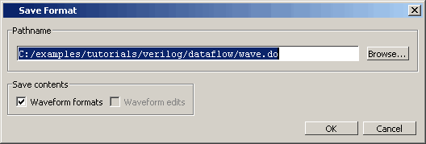

By default, all
Wave window information is lost once you close the window. If you
want to restore the window to a previously configured layout, you
must save a window format file with the following procedure.
Procedure
- Add the objects you want to
the Wave window.
- Edit and format the objects
to create the view you want.
- Save the
format to a file by selecting . This opens the Save Format
dialog box (Figure 1), where you can save waveform
formats in a .do file.
Figure 1. Save Format Dialog
- To use the format file, start
with a blank Wave window and run the DO file in one of two ways:
- In addition, you can use the write format restart command to create a single .do file
that will recreate all debug windows and breakpoints (see Saving and Restoring Breakpoints) when invoked with the do command
in subsequent simulation runs. The syntax is:
write format restart <filename>
- If the ShutdownFile modelsim.ini variable
is set to this .do filename, it will call the write format restart command upon exit.